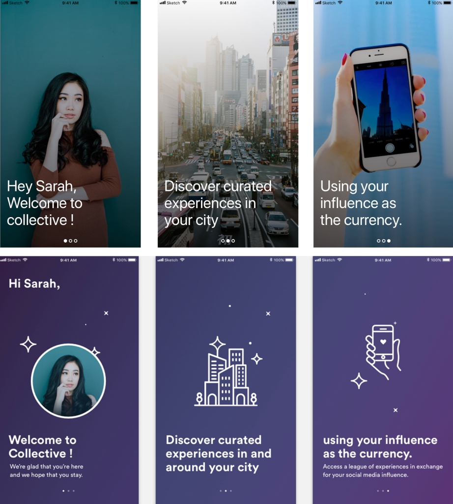
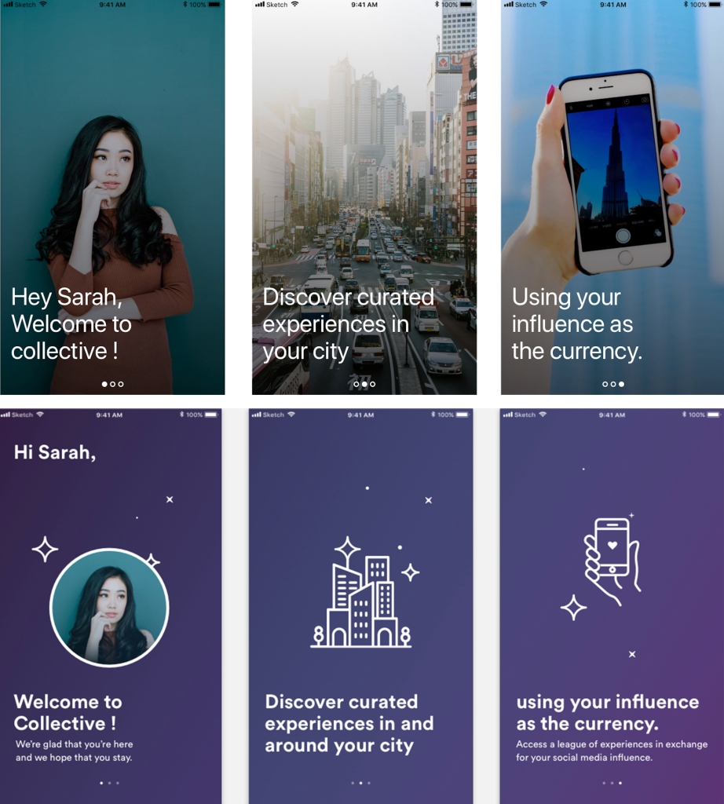

Context: As a company with a pulse on internet campaigns, Ykone found an opportunity in a unique challenge faced by the growing online market of influencers. With the rise in the number of people making a living out of product and service endorsements on social media, what would a fair trade version of this exchange look like?
We ran a classic 5-day design sprint to find out.
Role: Rapid Prototyping, Visual Design, User Testing
Team: Robin Dhanwani, Chaitanya Alluru
Duration: 2 weeks
Client: Ykone
After voting on the Sprint Question, we looked at the user journey map and picked one workflow that we’d like to further explore and sketch out in detail.

We then moved on to sketch 8 quick ideas each in 8 minutes, where all of your sketches represent the same screen/part of journey. The idea is to generate as many ideas as possible within a short timeframe, focusing on quantity of ideas not quality, and then once you’ve got a bunch of divergent thinking on one topic, to begin converging on some winning ideas by voting on the favourites.


We then reflect on our mind maps and Crazy Eights to fish out the best ideas; And then illustrate one of them in more detail. Everybody draws UI in the three or four frames of their storyboard showing a progression. It’s a way to make the user story diagram more concrete, and make something that will be shared anonymously and critiqued by the group.
On Tuesday, post breakfast and niceties, we spent time reviewing the concept solutions that we all individually created, and made a decision about which ideas was worth testing on the basis of the initial Sprint Question that was selected.
Once that decision was made, we created detailed wireframes for the prototype and finalised a flow of screens through a democratic debate, discussion and voting process.
Based on several of the lightning demos shared through the 2-day client engagement part of the Sprint, we set out to create the visual specifics for our selected wireframes.
The fidelity of the prototype was decided by the amount of detail that would be needed to make the user testing more accurate and useful.
Following are screenshots that represent the prototype we built on InVision, since the service has since been discontinued.
 

We created options for this on-boarding flow, and succeeding homepage and bookings sections, to test the core workflow with local influencers.
On Thursday, we tested the prototype with 6 potential users/influencers. We spoke to lifestyle bloggers, Shweta and Anupa, and food bloggers, Vinay, Somya and Noorain Every interviewee was a goldmine of feedback that we took into consideration for the iterations we made in the following weeks.
The key insights were around the following areas:

The product offering broadly resonated with all participants. Our key learning was to establish more trust in the platform. To that end we needed to improve and better the communication details about the exchange and ensure regular usage of platform by adding valuable incentive and engagement.
Action items for us in conclusion:
• Add an option to choose or customise the barter.
• Add more clarity on the specifics being offered by the brand/company.
• Spell out terms and agreements more comprehensively.
• Reminders to complete and update experience content.
• An option to cancel or reschedule a booking.
• An option to contact venue or organizers if and when needed.
• Have qualitative ratings be visible to the influencers.
This project helped me think about my role in strategic business decision making. I was able to look back to my participation as an enabler — allowing sprint participants feel safe about expressing their ideas so that we’re able to pick from a richer pool of solutions.